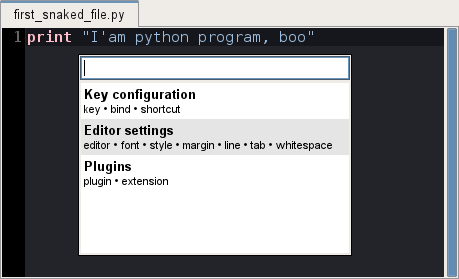
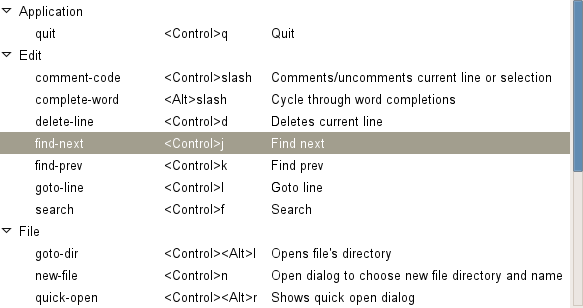
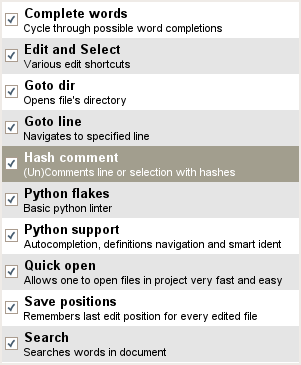

Getting started¶
This section explains how to start Snaked, perform basic editing tasks and configure it.
Running¶
After installation snaked script will be created. You can run it either from terminal or run dialog:
snaked
Quick Open dialog will be shown after Snaked’s start to allow one open first file.
This command will start snaked with a specified file opened:
snaked /tmp/first_snaked_file.py
Note
Specified file do not need to exist. Snaked will create it automatically on save operation.
You can provide several filenames to snaked:
snaked /tmp/first_snaked_file.py /tmp/second_snaked_file.py
And each file will be opened in own tab.

One can switch tabs on <alt>Left/<alt>Right keys.
Creating new file¶
Standard GTK open dialog is too frustrating and hard to use from keyboard, so I implemented the file create panel.

It provides folder auto-completion as you type. With Tab key you can cycle through proposals. Esc hides dialog, Enter opens an editor page associated to that file name.
Sessions¶
Snaked provides sessions to store open editors state on quit, this allow you forget about files at all. The following steps are required to enable sessions:
Run Snaked with -s (or --session) option giving a session name. For example:
snaked -s test /tmp/first_snaked_file.py
Now, after closing editor by <ctrl>q key or closing window by wm facilities test session will be created. Thus you can open it with that simple command:
snaked -s test
You can also select a session on snaked startup:
snaked --select-session
Think about sessions as some sort of separate workspaces to group your files. One session for task or project or whatever, use it freely.
Preferences¶
Preferences dialog is made available on <ctrl>p key press:
It is like Eclipse’s quick settings. You need to type what you want to configure it (font, key, etc.) and select wanted item.
There are only three core configuration dialogs.
Key configuration¶
Here you can see all Snaked shortcuts, and change them:
Editor settings¶
Allow one to tune editor theme, font, tabs, margin and so on.

Every gtksourceview language can have its own settings. Also there is a special language: default, its settings are spread over all langs. For example you can change style theme for default language and all editors will inherit this setting by default.
Plugins¶
Simple list with available extensions. Check to enable, uncheck to disable, nothing more. If a plugin provide it’s own configuration dialog it will appear in preferences.
Default editor shortcuts¶
These key bindings are provided by gtksourceview itself and can’t be changed (at least now).
- Tab / <shift>Tab – (de)indents current line or selection.
- <ctrl>Space – pop up completion dialog if any completions providers is associated with editor. Currently the only available provider works for python.
- <ctrl>c / <ctrl>v / <ctrl>x – standard copy/paste/cut editor shortcuts. Also there are common <ctrl>Insert / <shift>Insert / <shift>Delete.
- <ctrl>z / <ctrl>y – undo/redo
- <alt>Up / <alt>Down – moves selection content up or down. Very useful feature, especially with smart select.